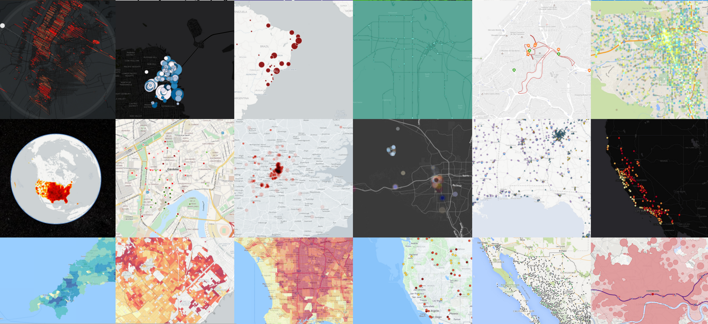
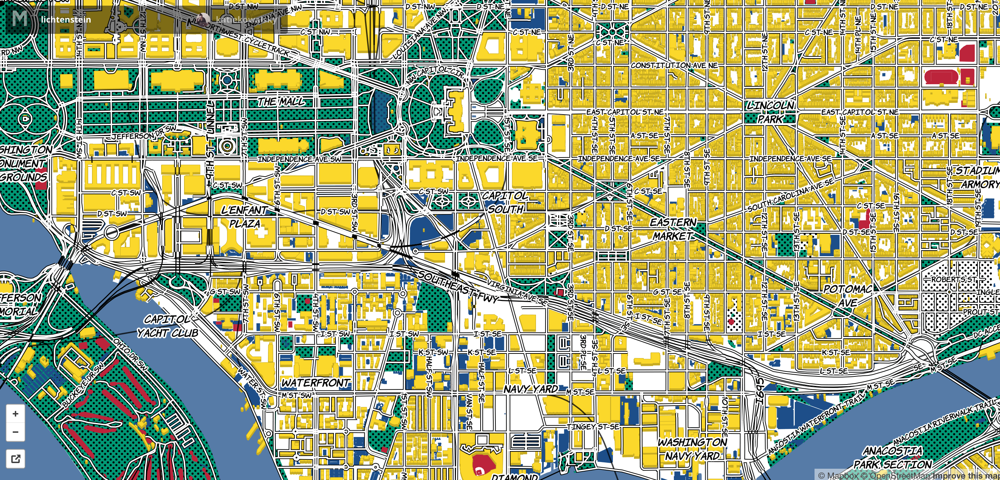
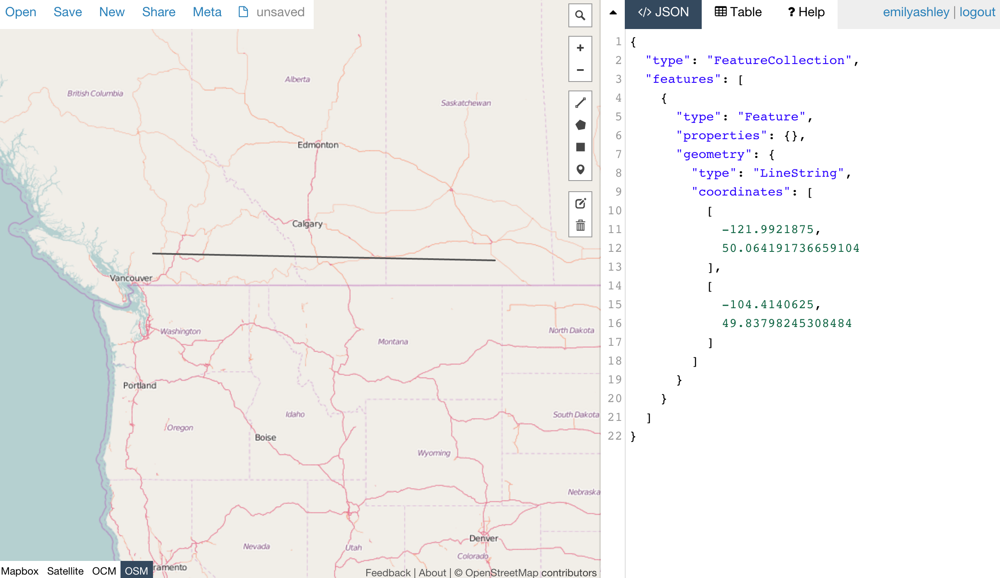
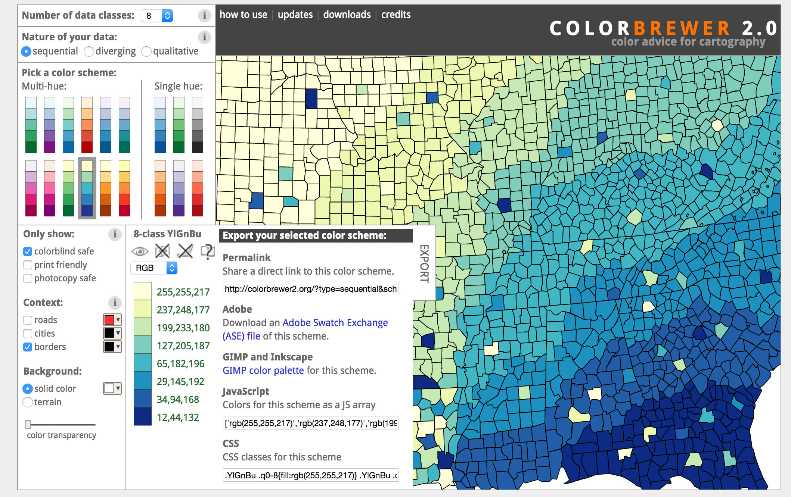
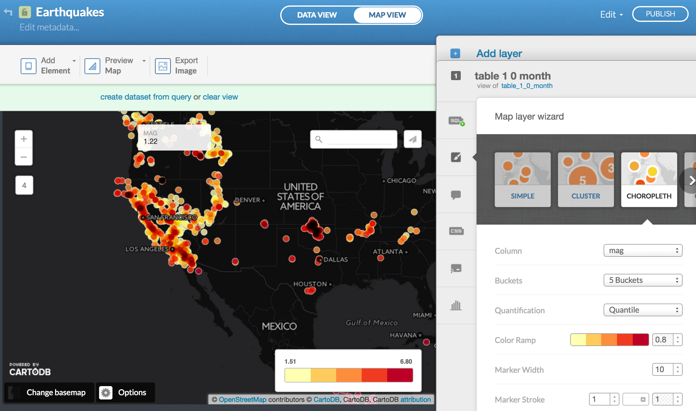

Super fast 5-minute-crash-course on...
web maps!
emilyashley.github.io/crash-course-on-web-maps/

This is not a map
kidding
First, let's start with anatomy
Instead of cells, maps have data.
Instead of circulatory and digestive systems, web maps have styles, tiles, and servers. oh my...
or something like that A&P is not my strongsuit. But here's THIS:
What is a web map? We've all seen them...
a little history:

In 1996, Mapquest launched its web service.
ta da!
Directions! Online! Revolutionary!
full page refresh to scroll or zoom. *sad trombone*
Google Maps to the rescue!
But what was the revolution?
Was it the interface?
The red marker?
The weather widget?

It was the tile. They load
way faster than one big map.

Pre-loading the edges is colloquially called a
slippy mapFun fact: Tiles can be any thing that's a raster!
All tiles
=
same size! 256x256 pixels
same boundaries

Each zoom level has its own set of tiles!
 Zoom level 0: one tile for the world.
Zoom level 0: one tile for the world. Zoom level 1: 4 tiles for the world.
Zoom level 1: 4 tiles for the world. Zoom level 2, 3, 4, 5
Zoom level 2, 3, 4, 5 Zoom level 13
Zoom level 13http://tile.openstreetmap.org/4/2/6.png
-- tile server.
http://tile.openstreetmap.org/4/2/6.png
-- zoom level.
http://tile.openstreetmap.org/4/2/6.png
-- place in the grid where the tile lives.
Exception:
D3 exists outside the world of tiles
you can’t easily make reference maps in D3 BUT can do things that are clumsy in tiled maps like...

choropleth maps or...

cartograms or...

different map projections (in the browser!)

D3

IS

IN

SANE
Out of the clouds and back to tile-based maps...
data layers or content layers or feature layers.
GIS users like the Gov use shapefiles, but web maps prefer KML, or more recently, topoJSON & geoJSON
What does the javascript library do? Grabs the tiles, adds content layer, handles interaction.
this is why the javascript, imho. interaction.
So.You may be thinking,
Where do I start?
Here are some 99*% open source tools and stacks that can meet your mapping needs
Do I need to make my own custom tiles?
Yes? Use
TileMill to design your own tiles.
pow
Style your map elements with
CartoCSS (or just carto)
Do I need a content layer?
No? Put all desired information into the tiles. Nightmare mode: use a UTFGrid for interactivity
Yes? Upload your own or grab data from open portals / API's.
Convert between file types using
OGRE
Not good with color theory or data vis? Grab a palette from ColorBrewer

Finally,
CartoDB takes care of almost all of this for you! It's kinda a one-stop shop to explore

Design wizards, basemaps, spatio-temporal (..uh.. timelapse) rendering! Available with a click & point!
Spatial analysis with SQL/PostgreSQL/PostGIS, map hosting, imbed in html or drop it in your js code.
So next time a project needs a map, you know where to start!
And basically...
This is totally a map
phewwww
Thanks!>
Presentation made with
big


{kind=link}